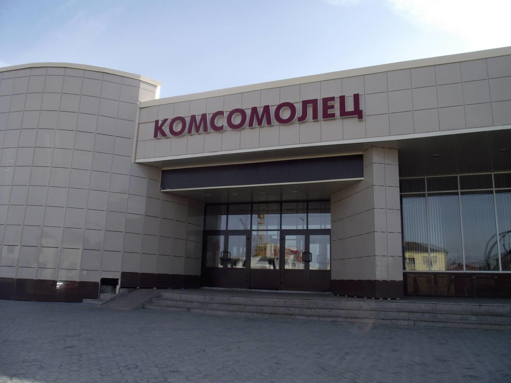

Театральная деятельность в Гагарине
В Гагарине идет активная театральная жизнь. Организованы театральные кружки для детей и взрослых. Представления коллективов проходят в народном театре, в доме культуры "Комсомолец". Жители города с удовольствием посещают театральные мероприятия.

Дом культуры "Комсомолец" - это досуговый центр, где проходят выступления местных и приглашенных коллективов, артистов, проводятся дискотеки для людей всех возростов. Также там организованы творческие кружки для детей и взрослых.
Звездный - это детский дом творчества. Там организовано множество детских кружков: спортивные, музыкальные, театральные и др. Там же проходят выступления детей.
Гагаринский драматический театр получил звание Народный в 1962 году и подтверждает данное звание каждые три года. Любительская труппа театра состоит из 25 человек: рабочих, учащихся школ и студентов. В репертуаре коллектива спектакли для детей и взрослых.